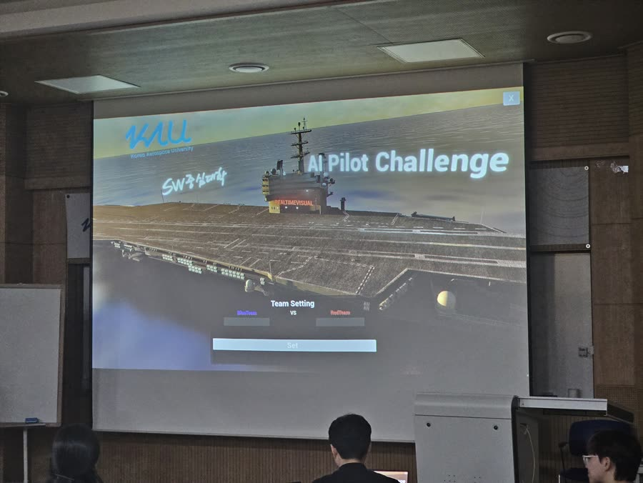

F-16 도그파이트(공중 교전) 시뮬레이션에서 스스로 판단하고 기동하는 AI 조종사 에이전트를 Behavior Tree(행동 트리)로 설계했습니다. 거리·시선각(LOS)·상대 자세각(AA) 등 교전 기하를 실시간 평가해 회피·공격·BFM 기동을 선택하는 구조로, 예선 3위를 기록했습니다.

에이전트의 핵심은 매 틱마다 교전 상황을 평가해 행동을 선택하는 트리 구조입니다:
MainTree
└── Sequence
├── AltitudeCheck // 고도 > 1000ft — 지면 충돌 방지 최우선
├── UpdateSensorInfo // 거리·LOS·AA 등 교전 기하 최신화
├── CheckTargetVisible // 적기 시야 확보 여부
└── Fallback (교전 선택)
├── Emergency_Evade // 적기 근접(500m 미만) → 긴급 회피
├── TryAttack // 거리 500–3000m · LOS < 1° · AA 45–135° → 공격 (기총/미사일 선택)
├── BFM_Plan // 상대 위치 기반 기동 선택
│ ├─ 적이 후방 → 방어 기동 (DBFM)
│ ├─ 내가 후방 → 공격 기동 (OBFM)
│ └─ 정면 조우 → Merge
├── EnergyFight // 에너지 우위 시 에너지전
└── PurePursue // 기본 추격
2025 F-16 AI Pilot 경진대회 예선 3위. 공중 교전 교리(BFM)를 코드 구조로 옮기는 과정에서, 규칙 기반 AI 설계와 실시간 판단 시스템의 우선순위 설계를 깊이 경험했습니다. 이 경험은 무인기·MuM-T 분야에서 자율 에이전트를 설계하는 기반이 되고 있습니다.